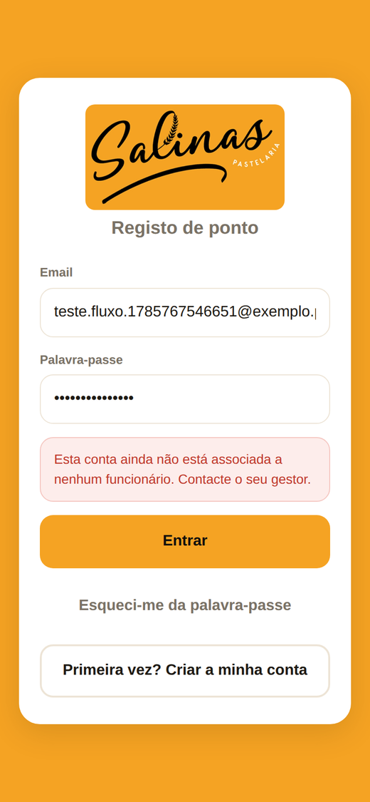

App do funcionário: anderson17quadri-cmd.github.io/Salinas/
Painel do gestor: anderson17quadri-cmd.github.io/Salinas/admin/
Índice
Para o funcionário
Instalar a app no telemóvel
Entrar pela primeira vez
Bater ponto
A ordem dos registos
Histórico e banco de horas
Justificar uma falta
Perfil e palavra-passe
Para o gestor
Entrar no painel
Dashboard: quem está ao serviço
Registar um funcionário
Criar o acesso e entregar a palavra-passe
Definir o horário — manhã, pão e noite
O QR code e o cartaz
Registos
Justificações
Banco de horas
Relatório mensal
Definições
Perguntas frequentes
Tratar da segurança da conta
Parte 1
Para o funcionário
Instalar a app, bater ponto e ver as suas horas. Cinco minutos a ler, uma vez só.
1.1 Instalar a app no telemóvel
O Salinas não está na Play Store nem na App Store — abre-se no browser e
instala-se a partir dali. Fica com ícone no ecrã principal e abre como
qualquer outra app.
Comece por abrir no telemóvel:
anderson17quadri-cmd.github.io/Salinas/
Android (Chrome)
Toque nos três pontinhos no canto superior direito.
Escolha «Instalar aplicação» ou «Adicionar ao ecrã principal».
Confirme. O ícone laranja do Salinas aparece no ecrã.
iPhone (Safari)
Tem de ser no Safari — no iPhone o Chrome não sabe instalar.
Toque no botão de partilha (o quadrado com a seta para cima), em baixo.
Deslize e escolha «Adicionar ao ecrã principal».
Toque em Adicionar.
Porque é que isto interessa
Instalada, a app abre sem a barra do browser e a câmara para ler o QR
funciona melhor. Se preferir, também dá para usar sempre pelo browser —
só é menos prático.
1.2 Entrar pela primeira vez
O gestor cria a sua conta e entrega-lhe o email e uma
palavra-passe parecida com GZCV-2694-CT. Escreva os dois
no ecrã de entrada e toque em Entrar.

À esquerda o ecrã de entrada; à direita o que aparece assim que entra.
Mude a palavra-passe
A que lhe deram é temporária e o gestor viu-a. Assim que entrar, vá a
Perfil → Mudar palavra-passe e escolha uma sua.
1.3 Bater ponto
É o botão grande cor de laranja no ecrã inicial. Por baixo do botão está
sempre escrito o que vai ser registado — «Entrada», ou
«Saída · Início de pausa», conforme o momento do dia.
O botão diz sempre o que vai registar; se houver mais do que uma
hipótese, pergunta qual.
Com QR code
Toque em Bater Ponto (ou em «Ler QR code»).
Autorize a câmara na primeira vez.
Aponte ao cartaz que está afixado na pastelaria.
Pronto — aparece o ecrã verde a confirmar.
Com GPS
Toque em Usar GPS.
Autorize a localização.
A app confirma que está dentro do raio da pastelaria e regista.
Se estiver fora do raio
O registo não é recusado — fica marcado como «fora do
raio» e a app pede-lhe uma justificação (por exemplo, «fui buscar
encomenda»). O gestor vê o motivo no painel.
1.4 A ordem dos registos
A app não deixa marcar duas entradas seguidas nem uma saída sem ter
entrado. É de propósito: evita horas erradas ao fim do mês.
Último registo
O que pode marcar a seguir
Nada ainda hoje
Entrada
Entrada
Início de pausa · Saída
Início de pausa
Fim de pausa
Fim de pausa
Início de pausa · Saída
Saída
Entrada (novo turno)
Se tentar uma coisa fora de ordem, a app explica em português o que falta
fazer primeiro.
1.5 Histórico e banco de horas
No separador Histórico vê mês a mês tudo o que marcou —
com a hora, o método (QR ou GPS) e, quando foi por GPS, a que distância
estava. Os botões em cima filtram só entradas, só saídas ou só pausas.
O cartão no topo é o seu banco de horas.
Ler o banco de horas
Saldo positivo (verde) — trabalhou mais do que o
horário. Conforme a política da casa, essas horas são compensadas com
folga ou pagas.
Saldo negativo (vermelho) — tem horas em dívida.
Não é falta: é saldo a repor mais à frente.
1.6 Justificar uma falta
No separador Faltas toque em Nova
justificação, escolha o dia (ou o intervalo de dias), o motivo
— doença, férias, assunto pessoal, outro — e escreva uma nota se quiser.
Cada justificação fica com o seu estado bem visível.
A justificação fica pendente até o gestor a ver. Depois
passa a aprovada ou recusada e recebe a
resposta no mesmo ecrã.
1.7 Perfil e palavra-passe
No separador Perfil vê os seus dados e o contrato (cargo,
horas por semana). É também aqui que muda a palavra-passe e termina sessão.
Se se esquecer da palavra-passe: no ecrã de entrada toque em
«Esqueci-me da palavra-passe», escreva o seu email e siga o
link que chega por email. Se o email não aparecer em poucos minutos, veja o
spam ou peça ao gestor para criar um acesso novo.
Parte 2
Para o gestor
Tudo o que se faz no painel: equipa, horários, QR code, faltas, banco de
horas e o mapa do mês.
2.1 Entrar no painel
O painel abre-se no computador (ou no telemóvel, mas é mais confortável
num ecrã grande):
anderson17quadri-cmd.github.io/Salinas/admin/
Entre com o email e a palavra-passe da sua conta de gestor.
Não é a conta do Supabase — é a conta de administrador criada para a
pastelaria.
2.2 Dashboard: quem está ao serviço
É a primeira página. Mostra o dia de hoje: quantos estão dentro, em pausa
ou já fora, quem chegou atrasado e quantas justificações estão à espera.
Cada pessoa com o estado, a hora de entrada e o atraso em minutos.
2.3 Registar um funcionário
Em Funcionários → Novo funcionário. Basta
o nome, o email, o cargo e as horas por semana.
A coluna Conta diz se a pessoa já consegue entrar na app.
Enquanto disser «Sem acesso», a ficha existe mas ainda não há login.
2.4 Criar o acesso e entregar a palavra-passe
Na linha do funcionário clique em Criar acesso. O painel
gera na hora uma palavra-passe fácil de ditar e mostra-a uma única vez.
Copie ou anote antes de fechar — depois de fechar não há como voltar a ver.
Porque é entregue em mão
O envio de emails do plano gratuito está limitado a 2 por
hora, o que não chega para dar acesso a uma equipa de uma vez.
Entregar a palavra-passe em mão é mais rápido e não depende de caixas de
spam. Se perder a palavra-passe, o funcionário usa «Esqueci-me da
palavra-passe» na app.
2.5 Definir o horário — manhã, pão e noite
Na linha do funcionário clique em Horário. Em cima estão
os três turnos da casa: um clique preenche de segunda a sábado.
Manhã
06:00 – 14:00
8 horas
Pão
11:00 – 19:00
8 horas
Noite
18:00 – 02:00
8 horas · passa a meia-noite
Depois de aplicar o turno pode ajustar dia a dia — deixe as horas
vazias para marcar folga.
O turno da noite
Das 18:00 às 02:00 o turno atravessa a meia-noite. O Salinas conta isso
como 8 horas, e não como um número negativo — ao lado de
cada dia aparece a duração calculada, com a etiqueta «noite» para não haver
dúvidas.
O horário serve para dois cálculos: o atraso que aparece no
dashboard, e as horas esperadas do relatório mensal e do banco
de horas. Sem horário definido, a pessoa continua a bater ponto normalmente —
só não há com o que comparar.
2.6 O QR code e o cartaz
Em QR Code está o código da pastelaria, com o logo ao
centro. Descarregue o cartaz A4, imprima e afixe onde a
equipa passa à entrada.
Gerar código novo
O botão Gerar novo código invalida o cartaz que está
afixado. Use-o se alguém tirar fotografia ao QR para bater ponto de casa —
mas não se esqueça de imprimir e trocar o cartaz a seguir.
2.7 Registos
Em Registos vê tudo o que foi marcado, com filtros por
funcionário, por tipo e por intervalo de datas. Os registos feitos fora do
raio aparecem assinalados, com a distância e a justificação escrita pela
pessoa.
Se um registo estiver errado — alguém se esqueceu de marcar a saída, por
exemplo — pode corrigi-lo aqui. As correções ficam marcadas como feitas pelo
gestor.
2.8 Justificações
Em Justificações estão os pedidos de faltas. Cada um mostra
quem pediu, os dias, o motivo e a nota.
Aprovar faz com que aqueles dias deixem de contar como
falta por marcar no relatório. Recusar mantém-nos como
ausência. Nos dois casos pode escrever uma resposta, que a pessoa vê na app.
2.9 Banco de horas
O banco de horas guarda a diferença entre o que foi trabalhado e o que
estava previsto, mês a mês, por pessoa.
Crédito, dívida e saldo líquido de cada funcionário.
Fechar o período
No início de cada mês clique em Fechar período e escolha o
mês anterior. O Salinas calcula a diferença de cada pessoa e lança-a no banco.
Pode clicar duas vezes sem medo: um mês já fechado é ignorado, não conta a
dobrar.
Lançar e liquidar à mão
Lançar serve para acertos fora do cálculo automático (horas
combinadas à parte, por exemplo). Liquidar fecha um movimento
que já foi resolvido — pago, ou compensado com folga.
Fora do prazo
Os saldos com mais tempo do que o limite definido (por omissão 12 meses)
aparecem marcados como fora do prazo. É um aviso para
decidir: pagar, dar folga ou renegociar.
2.10 Relatório mensal
Em Relatório mensal escolha o mês. Para cada pessoa vê as
horas trabalhadas, as esperadas, o saldo, as faltas justificadas e pendentes,
os dias com entrada e os dias sem registo nem justificação.
O botão Exportar CSV descarrega um ficheiro que abre no
Excel — é o que se manda à contabilidade.
2.11 Definições
Campo
Para que serve
Morada, latitude, longitude
O ponto a partir do qual se mede o raio do GPS.
Raio permitido
Distância aceite, em metros. 100 m é um bom começo.
QR code / GPS
Ligar ou desligar cada método de marcação.
Foto obrigatória
Pede uma selfie a cada registo. Mais rigor, mais demora.
Regime de folgas
Fixo (folga sempre no mesmo dia) ou Rotativo (a folga muda de semana — caso da Salinas).
Política do banco de horas
Apenas reportar · Compensar com folga · Descontar · Pagar como extra.
Limite de compensação
Meses até um saldo ser marcado como fora do prazo.
A escala 6x2 da Salinas
A equipa trabalha 6 dias e folga 2, e a folga vai mudando de semana
para semana — por isso o horário de cada pessoa fica preenchido todos os
dias, e é o próprio dia sem ponto batido que conta como
folga, não como falta. É essa a diferença entre os dois
regimes: no fixo, um dia com horário e sem ponto é falta;
no rotativo — o da Salinas — passa a ser folga, e só é
falta se a pessoa tiver justificação (o que prova que, afinal, estava de
escala nesse dia).
Para ligar o GPS
Enquanto a latitude e a longitude estiverem vazias, só o QR code funciona.
Para as obter: abra o Google Maps, carregue e mantenha no sítio exacto da
pastelaria, e copie os dois números que aparecem em cima.
Parte 3
Perguntas frequentes
Esqueci-me de marcar a saída ontem. E agora?
Diga ao gestor. Ele corrige o registo em Registos. Como a
app não deixa duas entradas seguidas, no dia seguinte vai aparecer-lhe a
indicação de que ficou uma entrada por fechar.
O QR não lê.
Confirme que autorizou a câmara e limpe a lente. Se estiver escuro, acenda
a luz. Se mesmo assim não ler, use o GPS — ou peça ao gestor para imprimir o
cartaz outra vez, maior.
Diz que estou fora do raio e eu estou na pastelaria.
Dentro de edifícios o GPS erra facilmente 50–100 metros. Bata ponto na
mesma e escreva a justificação; ou use o QR code, que não depende de
localização. O gestor pode também aumentar o raio nas Definições.
A app abre e fica em branco / mostra coisas antigas.
Feche-a por completo e abra outra vez. A app guarda uma cópia para
funcionar sem rede e, ao reabrir, vai buscar a versão nova.
Trabalho à noite. As horas contam bem?
Sim. O turno das 18:00 às 02:00 conta 8 horas. Bata entrada às 18:00 e
saída às 02:00 normalmente — o Salinas percebe que passou a meia-noite.
Um funcionário saiu da casa.
Em Funcionários, Desactivar. A ficha e o
histórico ficam guardados para os relatórios, mas a pessoa deixa de conseguir
bater ponto.
Tenho saldo negativo. Isso é falta?
Não. Saldo negativo é dívida de horas — horas a repor.
Falta é um dia em que não apareceu. São coisas separadas e aparecem em sítios
diferentes.
Não bati ponto ontem, mas era o meu dia de folga. Vai contar como falta?
Não. A Salinas usa o regime rotativo: como a folga muda
de semana para semana, o próprio dia sem ponto e sem justificação é que é
lido como folga. Só conta como falta um dia em que houvesse uma
justificação a dizer que, afinal, estava de escala.
Parte 4
Tratar da segurança da conta
Três coisas a fazer uma vez, e depois esquecer.
Mudar a palavra-passe de gestor. A que foi usada na
instalação é temporária e passou por um chat. Troque-a em «Esqueci-me da
palavra-passe», no painel.
Revogar as chaves da instalação. No painel do Supabase:
Project Settings → API Keys, apagar a chave secreta chamada
claudinho; e na conta, Access Tokens, apagar o token
claude-setup-salinas. Serviram só para montar o projecto e já não
são precisas.
Pedir a cada funcionário que mude a palavra-passe na
primeira vez que entrar.
O que já está protegido
Cada pessoa só vê os seus próprios registos; o token do QR code nem sequer
é devolvido pela API a quem não é gestor; e as fotografias ficam separadas
por empresa. Isto está garantido no servidor — não depende da app.
Salinas — registo de ponto da Pastelaria Salinas
Este manual é gerado a partir de docs/manual/manual.html.